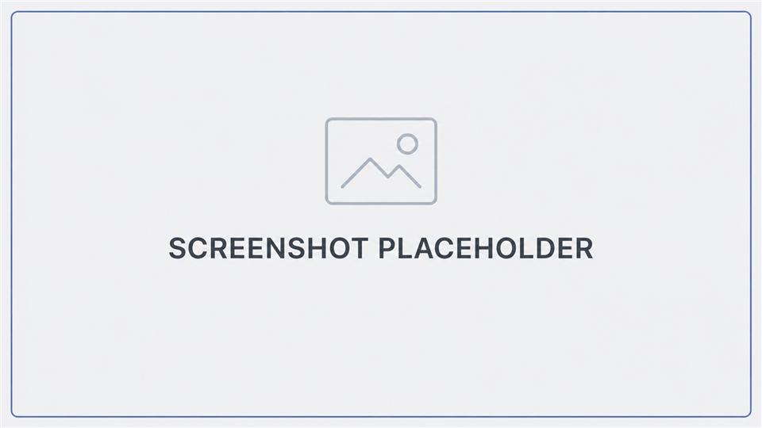
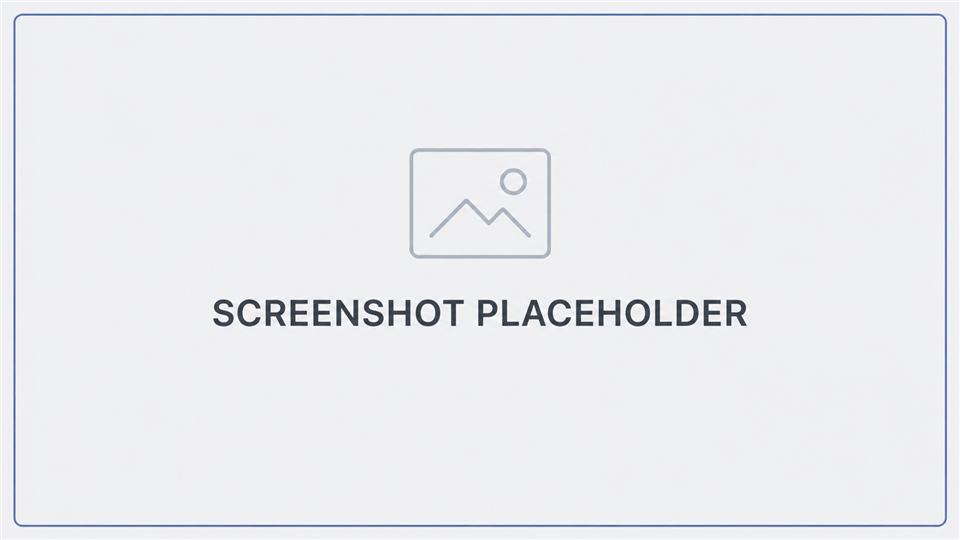
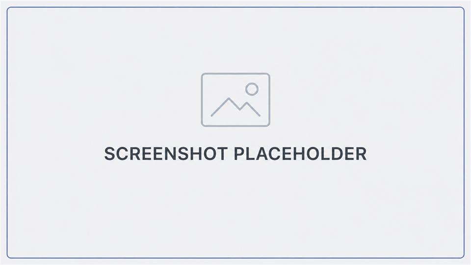
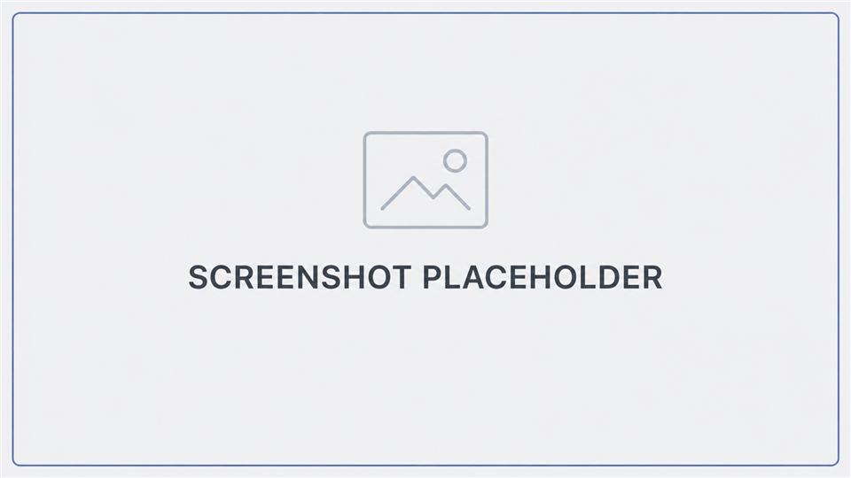
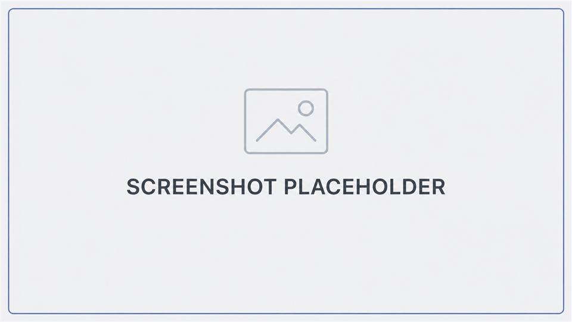

Canvas tool
Premium/Pro feature: Canvas requires the Canvas Tool feature in the QReports license. It is available in the applicable Premium/Pro package. PowerPoint integration additionally requires the PowerPoint add-in feature.
Canvas Web creates multi-page visual reports from queries, tables, measures, parameters, charts, and formatted tiles. The current ribbon button opens the WebView report designer; the old Qanvas tool is available under Legacy tools. The same web designer is used from Excel and PowerPoint, so a visual definition follows the same query and parameter rules in both hosts.
The report structure pane is on the left, the page canvas is in the centre, and Properties and Filters are on the right. Both side panes are resizable and collapsible from their edge buttons. Select a tile to edit it; click the page background to clear the selection. Drag a tile by its header and resize it from any corner. Alignment guides appear while moving or resizing objects.

Open Canvas
From Excel, choose QRep > Canvas Web. You can also right-click a supported QReports shape or picture and open its stored Canvas definition.
From PowerPoint, choose QReports > New Canvas, select an existing Canvas shape and choose Edit Selected, or use the shape context menu. See PowerPoint add-in.
Canvas Web can open and save standalone .canvasweb.json files. Recent lists only valid Canvas Web documents, newest first, and hides the common file extension for readability. The embedded workbook representation remains compatible with the QReports Canvas definition used by Excel and PowerPoint.
Select and arrange objects
Select one object or drag a selection rectangle around several objects. Selected objects can be moved with the mouse or arrow keys. Right-click an object to duplicate, remove, or change its layer order. The Handles command hides design handles, and Header tags hides the small Table, Matrix, Chart, or Text type labels without hiding the tile title.
Text tiles and text graphics support formatted HTML content. Double-click their content to open and focus the formatted-text editor; double-click a tile header to edit its title.
Pages, data sources, and parameters
Pages define layout, size, background, tiles, and graphics. Data sources are document-level, so the same loaded source can be reused on several pages. Every report has one protected Main source, normally created from the Excel source that opened Canvas. Add any number of Global sources when visuals need other connections or queries.

Each source owns its query and measures. Every data-bound tile initially uses Main source, but its source can be changed independently—for example, several tiles can share Global source 1 while other tiles continue to use Main source.

Use Edit query to open Query Web, Measures to manage Mini DAX measures, and Update to load or refresh the selected source. The available fields and measures follow the source of the selected tile.
Parameters are global definitions shared by every source. A value such as period 202605 or region Europe can therefore be resolved consistently in Main source and all global sources. Excel _control values remain authoritative when Canvas is opened from a workbook.
Tile types

| Tile | Typical use |
|---|---|
| Table | Detailed rows with selected columns, headers, totals, and formatting. |
| Matrix | Grouped and hierarchical data with measures, totals, and conditional formatting. |
| Chart | Visual analysis using the shared QReports chart designer. |
| Card | A prominent KPI value with caption, comparison, or delta. |
| Text | Titles, explanations, dynamic parameter text, and annotations. |
| Picture | Logos, icons, illustrations, and other image content. |
Table, Matrix, Chart, and Card tiles use their selected source. Text and Picture tiles are presentation objects and do not require a data field.
Create a first Canvas report
- Open Canvas and add or rename the first page.
- Configure Main source, or add a global source, and use Edit query to retrieve data.
- Update the source and confirm that its fields appear under Data.
- Add a Table tile and select the fields to display.
- Add a Chart or Card using the same page data.
- Resize and align the tiles on the canvas.
- Add global parameters or source/tile filters when the report needs interaction.
- Hide handles and header tags to review the finished layout.
- Save or return the Canvas to its host.
Tables and matrices
Select a table or matrix and choose Design to open the web visual builder. Its layout is consistent for both visuals: available Fields on the left, selected objects and formatting in the middle, and the live preview on the right. Drag fields into the chosen columns, rows, or values and use Advanced ordering for multi-column ascending/descending order.
Matrix rows form an ordered hierarchy. Tabular layout keeps a separate column for each row level, while Outline uses one indented hierarchy column. Parent levels can show formatted subtotals at the top or bottom, optional blank lines, and expandable +/- controls. The lowest row level remains detail and follows the normal Table/Matrix formatting. Value headers follow their value-column alignment.

Charts
Chart tiles use the shared Chart tool. Select categories and series, then configure labels, axes, gridlines, colors, markers, lines, and chart-specific options.
When a chart is saved back to Canvas, both its visible rendering and JSON definition are stored. Reopening Design Chart should restore the editor from that definition.
Parameters and filters
Canvas uses the shared parameter model: text, lists, hierarchical multi-select trees, date pickers, numeric inputs, formatting, and text parsing.
- In Excel-hosted Canvas, parameters are refreshed from the workbook
_controlsheet. - In PowerPoint, parameters are stored with the presentation and can refresh all Canvas shapes.
- Source filters apply to already loaded source data and affect every tile connected to that source.
- Tile filters apply only to their referenced tile and remain listed with the tile name.

Use the same {{parameter}} syntax in SQL, Mini SQL, text, and supported visual definitions.
Graphics and connectors
Canvas graphics include formatted text, lines, rectangles, and connectors. Lines and rectangles support color, thickness, solid/dotted/dashed styles, shading, transparent fill, rounding, movement, and resizing. Connectors attach to defined points on tile edges and follow tiles as they move. Their route, endpoints, arrow size, line style, and layer order can be configured.

Layout, appearance, and export
Canvas supports preset or manual page sizes, solid page colors, background images, rounded tiles, transparent Card backgrounds, optional tile borders, and explicit layer ordering. Card tiles provide configurable value and caption templates, typography, comparisons, and parameter tokens.

The header can create or open a standalone Canvas document, maintain recent files, and save changes. When hosted by Excel or PowerPoint, returning to the host captures the page and stores both the rendered image and editable definition.
Return to Excel
When hosted by Excel, Return to Excel stores the Canvas specification with the workbook shape and replaces or inserts its rendered image. Loading the worksheet refreshes stored Canvas shapes through an off-screen render-only process, so the editor does not open or flash during a normal report refresh.
Keep the underlying workbook connections, _control parameters, and report code with the workbook. The rendered picture is only the visible result; the stored Canvas JSON is required for later editing.
Use Canvas in PowerPoint

The PowerPoint add-in opens the same Canvas editor and returns the result as a picture on the slide. The Canvas JSON is stored with that picture so it can be edited and rerendered later.
PowerPoint provides New Canvas, Edit Selected, Load selected, and Parameters. Loading rerenders selected or all stored Canvas shapes from their definitions. See the PowerPoint QRep Ribbon.
Current considerations
- Test queries in Query Tool before building a large visual page.
- Large images and many detailed tiles increase rendering time and file size.
- Keep connection credentials out of Canvas text and screenshots.
- API-backed page-query behavior can vary by version; API Explorer and Query Tool remain the supported definition path.
- A rendered image without its stored Canvas definition cannot be reopened for full editing.
Continue with Query Tool, Parameters, Chart tool, or PowerPoint add-in.